World Gallery
There are six unique worlds in Pac-man Arrangement, each with their own theme, music track
and fruit. Some, adding new level features, ones that will be discussed below.
World 0 - Toy Box World
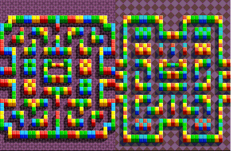
- The only two stages of this world give you the run down of how to play the game
and the easiest part of the game. this world also introduces Dash pads, of which will be discussed
below.
World 1 - Retro Maze World
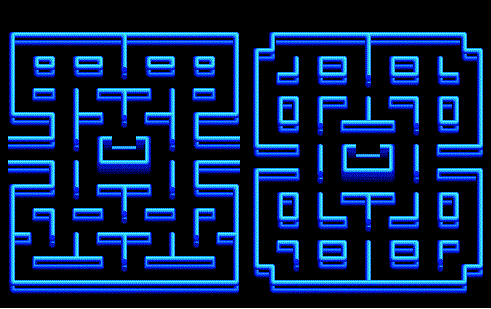
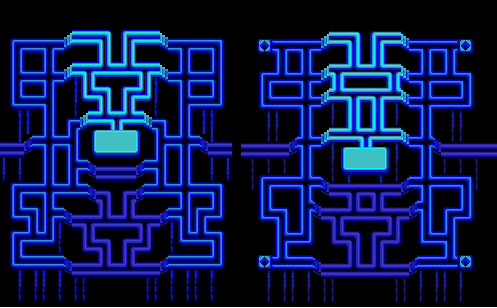
- An homage to the original Pac-man maze design, World 1 stays fairly simple. at 1-4, you are
introduced to jump pads, which become more apparent in later levels
World 2 - Water World
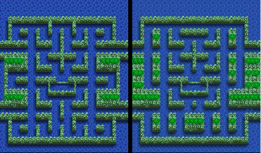
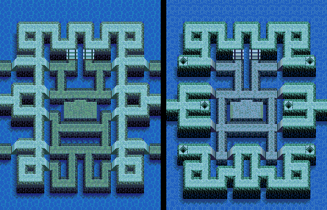
- This is where the real challange starts. At this point, Kinky will start moving
much faster and transforming the ghost gang more frequently. This world also introduces
fat pellets, which slows down Pac-man when he eats them, so watch your back!
World 3 - Green World
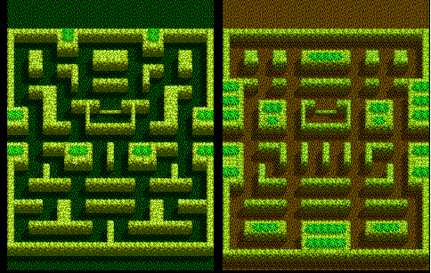
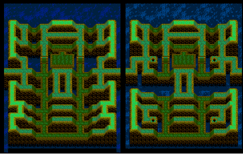
- At this point, you will notice a pattern in the level layout. Two basic levels to
get a feel for the ghost difficulty changes and setting. Then, the last two levels are more involved.
Here, you will have to deal with both slope, fat pellats and more long stretches that can
make you trapped, so watch out.
World 4 - Ancient Ruins World
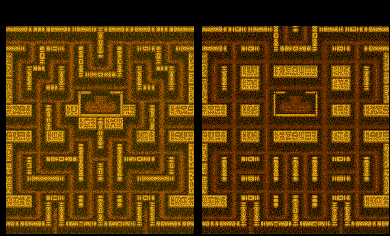
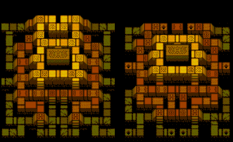
- Now the game is gonna get really difficult, with Kinky now able to not only transform
the whole ghost gang, but, after some time, will come out of his vulnerable state. He will
still only chase the other ghosts, but now you don't have a back up power-pellet!
With more open corners and faster ghosts, this world will challange you more than before.
World 5 - Secret monster Base World
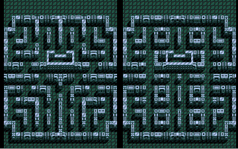
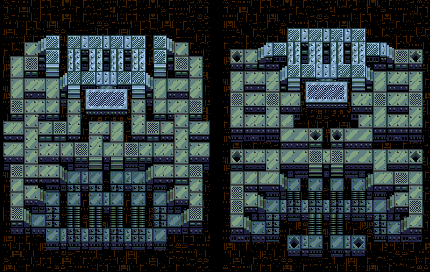
- You're in the belly of the beast... or, well, ghost. Either way, the ghosts
won't pull any more punches for you. Kinky will transform the ghost at a break neck pace,
pellet placements will be the most inconvenient and the ghosts will be targeting
you with more frequency. This world is a true test of your abilities as a Pac-man gamer.
You're almost there, you got this!
Final Round!
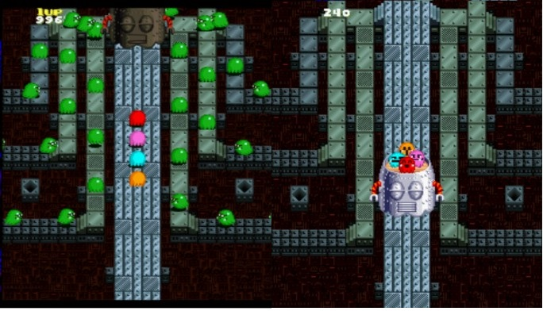
- The Final Challenge! With the Ghosts backed into a corner, they still have a card up
their sleeves. A two part battle that will take all your skills to even get through
with lives left!
The first part makes you deal with almost unending Kinky clones with the Ghost Gang's
colors and abilites, starting with red and ending with orange. Once All the pellets of
the first phase is done, you'll have to come face to face with the Ghost Bot itself.
DON'T GIVE UP!
Level features
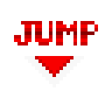
- Jump pads are placed in every last level of a world excluding World 0.
They are all color coordinated, meaning that if you land on a red pad, you'll
jump to the next red pad. Both you and the Ghosts can use them, and you also even
get invinsibility frames upon landing, so use that to your advantage.
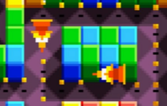
- Dash Pads are situated ususally in the second level of every world. When Pac-man
touches the pad's pointing direction, he flies quickly toward that direction.
This will make Pac-man eat pellets quickly and even become invinsible, stunning any ghosts
in his way. Dashes are single use, so either use them sparringly or quickly
to speedrun.